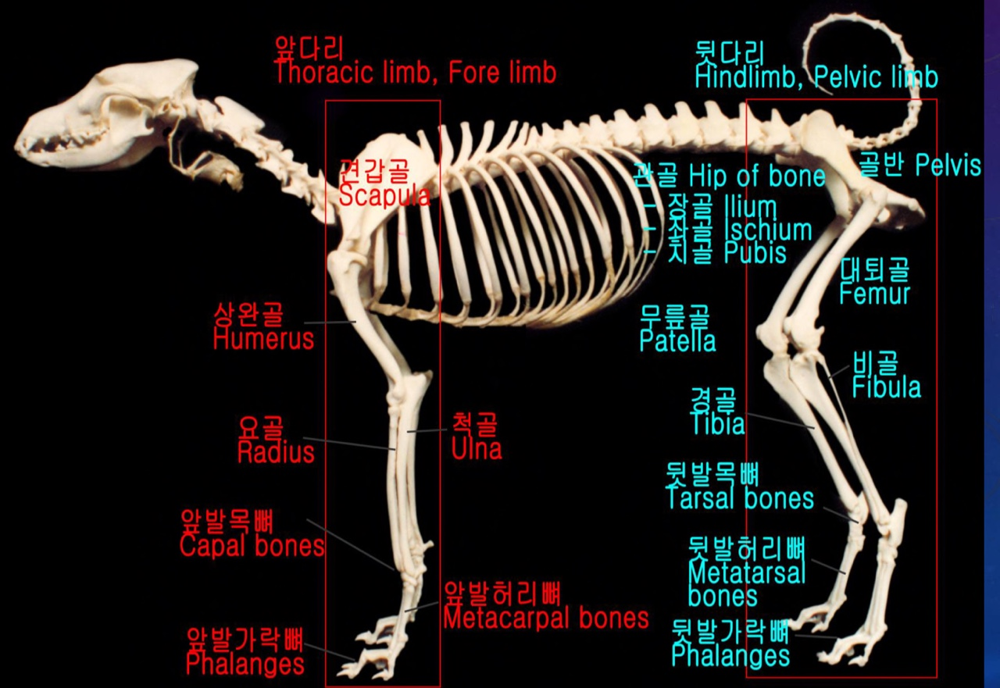

- 해부학
- 두개골
- 앞다리
- 뒷다리
해부학(anatomy)이란?
해부학은 생물의 구조를 연구하는 학문이다

해부학관련용어
- 단면에 사용되는 용어
- 정중단면(Median plane)
- 시상단면(Sagittal plane)
- 가로단면(Transverse plane)
- 등단면(Dorsal plane)
- 방향에 사용되는 용어
- Dorsal
- Ventral
- Medial
- Lateral
- Cranial
- Caudal
- 사지에 사용되는 용어
- Proximal
- Distal
- Radial
- Ulnar
- Tibial &Fibular